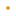
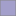

<!doctype html>
<html lang="en">
    <head>
        <meta charset="utf-8">
        <meta http-equiv="X-UA-Compatible" content="IE=edge">
        <meta name="viewport" content="initial-scale=1,user-scalable=no,maximum-scale=1,width=device-width">
        <meta name="mobile-web-app-capable" content="yes">
        <meta name="apple-mobile-web-app-capable" content="yes">
        <link rel="stylesheet" href="css/leaflet.css">
        <link rel="stylesheet" href="css/qgis2web.css"><link rel="stylesheet" href="css/fontawesome-all.min.css">
        <style>
        html, body, #map {
            width: 100%;
            height: 100%;
            padding: 0;
            margin: 0;
        }
        </style>
        <title>Pollution Pathways: Waste Sites and Impervious Surfaces in Dar es Salaam</title>
    </head>
    <body>
        <div id="map">
        </div>
        <script src="js/qgis2web_expressions.js"></script>
        <script src="js/leaflet.js"></script>
        <script src="js/leaflet.rotatedMarker.js"></script>
        <script src="js/leaflet.pattern.js"></script>
        <script src="js/leaflet-hash.js"></script>
        <script src="js/Autolinker.min.js"></script>
        <script src="js/rbush.min.js"></script>
        <script src="js/labelgun.min.js"></script>
        <script src="js/labels.js"></script>
        <script src="data/Impervioussurfacecover_1.js"></script>
        <script src="data/Poorlymanagedwastesite_2.js"></script>
        <script>
        var highlightLayer;
        function highlightFeature(e) {
            highlightLayer = e.target;

            if (e.target.feature.geometry.type === 'LineString') {
              highlightLayer.setStyle({
                color: '#ffff00',
              });
            } else {
              highlightLayer.setStyle({
                fillColor: '#ffff00',
                fillOpacity: 1
              });
            }
        }
        var map = L.map('map', {
            zoomControl:true, maxZoom:28, minZoom:1
        })
        var hash = new L.Hash(map);
        map.attributionControl.setPrefix('<a href="https://emwaugh.github.io" target="_blank">Emma Waugh</a> &middot; <a href="https://github.com/tomchadwin/qgis2web" target="_blank">qgis2web</a> &middot; <a href="https://leafletjs.com" title="A JS library for interactive maps">Leaflet</a> &middot; <a href="https://qgis.org">QGIS</a>');
        var autolinker = new Autolinker({truncate: {length: 30, location: 'smart'}});
        var bounds_group = new L.featureGroup([]);
        function setBounds() {
            if (bounds_group.getLayers().length) {
                map.fitBounds(bounds_group.getBounds());
            }
            map.setMaxBounds(map.getBounds());
        }
        map.createPane('pane_OSMStandard_0');
        map.getPane('pane_OSMStandard_0').style.zIndex = 400;
        var layer_OSMStandard_0 = L.tileLayer('http://tile.openstreetmap.org/{z}/{x}/{y}.png', {
            pane: 'pane_OSMStandard_0',
            opacity: 1.0,
            attribution: '<a href="https://www.openstreetmap.org/copyright">© OpenStreetMap contributors, CC-BY-SA</a>',
            minZoom: 1,
            maxZoom: 28,
            minNativeZoom: 0,
            maxNativeZoom: 19
        });
        layer_OSMStandard_0;
        map.addLayer(layer_OSMStandard_0);
        function pop_Impervioussurfacecover_1(feature, layer) {
            layer.on({
                mouseout: function(e) {
                    for (i in e.target._eventParents) {
                        e.target._eventParents[i].resetStyle(e.target);
                    }
                },
                mouseover: highlightFeature,
            });
            var popupContent = '<table>\
                    <tr>\
                        <td colspan="2">Ward name: ' + (feature.properties['ward_name'] !== null ? autolinker.link(feature.properties['ward_name'].toLocaleString()) : '') + '</td>\
                    </tr>\
                    <tr>\
                        <td colspan="2">Population: ' + (feature.properties['totalpop'] !== null ? autolinker.link(feature.properties['totalpop'].toLocaleString()) : '') + '</td>\
                    </tr>\
                    <tr>\
                        <td colspan="2">Impervious surface cover (% area): ' + (feature.properties['pct_imperv'] !== null ? autolinker.link(feature.properties['pct_imperv'].toLocaleString()) : '') + '</td>\
                    </tr>\
                    <tr>\
                        <td colspan="2">Total waste sites: ' + (feature.properties['wastecount'] !== null ? autolinker.link(feature.properties['wastecount'].toLocaleString()) : '') + '</td>\
                    </tr>\
                    <tr>\
                        <td colspan="2">Waste sites per sqkm: ' + (feature.properties['wst_denskm'] !== null ? autolinker.link(feature.properties['wst_denskm'].toLocaleString()) : '') + '</td>\
                    </tr>\
                </table>';
            layer.bindPopup(popupContent, {maxHeight: 400});
        }

        function style_Impervioussurfacecover_1_0(feature) {
            if (feature.properties['propimperv'] >= 0.001729 && feature.properties['propimperv'] <= 0.095849 ) {
                return {
                pane: 'pane_Impervioussurfacecover_1',
                opacity: 1,
                color: 'rgba(134,134,134,1.0)',
                dashArray: '',
                lineCap: 'butt',
                lineJoin: 'miter',
                weight: 1,
                fill: true,
                fillOpacity: 1,
                fillColor: 'rgba(252,251,253,1.0)',
                interactive: true,
            }
            }
            if (feature.properties['propimperv'] >= 0.095849 && feature.properties['propimperv'] <= 0.161696 ) {
                return {
                pane: 'pane_Impervioussurfacecover_1',
                opacity: 1,
                color: 'rgba(134,134,134,1.0)',
                dashArray: '',
                lineCap: 'butt',
                lineJoin: 'miter',
                weight: 1,
                fill: true,
                fillOpacity: 1,
                fillColor: 'rgba(220,220,236,1.0)',
                interactive: true,
            }
            }
            if (feature.properties['propimperv'] >= 0.161696 && feature.properties['propimperv'] <= 0.264827 ) {
                return {
                pane: 'pane_Impervioussurfacecover_1',
                opacity: 1,
                color: 'rgba(134,134,134,1.0)',
                dashArray: '',
                lineCap: 'butt',
                lineJoin: 'miter',
                weight: 1,
                fill: true,
                fillOpacity: 1,
                fillColor: 'rgba(163,160,203,1.0)',
                interactive: true,
            }
            }
            if (feature.properties['propimperv'] >= 0.264827 && feature.properties['propimperv'] <= 0.350801 ) {
                return {
                pane: 'pane_Impervioussurfacecover_1',
                opacity: 1,
                color: 'rgba(134,134,134,1.0)',
                dashArray: '',
                lineCap: 'butt',
                lineJoin: 'miter',
                weight: 1,
                fill: true,
                fillOpacity: 1,
                fillColor: 'rgba(106,81,163,1.0)',
                interactive: true,
            }
            }
            if (feature.properties['propimperv'] >= 0.350801 && feature.properties['propimperv'] <= 0.510458 ) {
                return {
                pane: 'pane_Impervioussurfacecover_1',
                opacity: 1,
                color: 'rgba(134,134,134,1.0)',
                dashArray: '',
                lineCap: 'butt',
                lineJoin: 'miter',
                weight: 1,
                fill: true,
                fillOpacity: 1,
                fillColor: 'rgba(63,0,125,1.0)',
                interactive: true,
            }
            }
        }
        map.createPane('pane_Impervioussurfacecover_1');
        map.getPane('pane_Impervioussurfacecover_1').style.zIndex = 401;
        map.getPane('pane_Impervioussurfacecover_1').style['mix-blend-mode'] = 'normal';
        var layer_Impervioussurfacecover_1 = new L.geoJson(json_Impervioussurfacecover_1, {
            attribution: '',
            interactive: true,
            dataVar: 'json_Impervioussurfacecover_1',
            layerName: 'layer_Impervioussurfacecover_1',
            pane: 'pane_Impervioussurfacecover_1',
            onEachFeature: pop_Impervioussurfacecover_1,
            style: style_Impervioussurfacecover_1_0,
        });
        bounds_group.addLayer(layer_Impervioussurfacecover_1);
        map.addLayer(layer_Impervioussurfacecover_1);
        function pop_Poorlymanagedwastesite_2(feature, layer) {
            layer.on({
                mouseout: function(e) {
                    for (i in e.target._eventParents) {
                        e.target._eventParents[i].resetStyle(e.target);
                    }
                },
                mouseover: highlightFeature,
            });
            var popupContent = '<table>\
                    <tr>\
                        <td colspan="2">' + (feature.properties['ward_name'] !== null ? autolinker.link(feature.properties['ward_name'].toLocaleString()) : '') + '</td>\
                    </tr>\
                    <tr>\
                        <td colspan="2">' + (feature.properties['count'] !== null ? autolinker.link(feature.properties['count'].toLocaleString()) : '') + '</td>\
                    </tr>\
                </table>';
            layer.bindPopup(popupContent, {maxHeight: 400});
        }

        function style_Poorlymanagedwastesite_2_0() {
            return {
                pane: 'pane_Poorlymanagedwastesite_2',
                radius: 2.0000000000000004,
                opacity: 1,
                color: 'rgba(236,110,0,1.0)',
                dashArray: '',
                lineCap: 'butt',
                lineJoin: 'miter',
                weight: 1,
                fill: true,
                fillOpacity: 1,
                fillColor: 'rgba(255,137,1,1.0)',
                interactive: true,
            }
        }
        map.createPane('pane_Poorlymanagedwastesite_2');
        map.getPane('pane_Poorlymanagedwastesite_2').style.zIndex = 402;
        map.getPane('pane_Poorlymanagedwastesite_2').style['mix-blend-mode'] = 'normal';
        var layer_Poorlymanagedwastesite_2 = new L.geoJson(json_Poorlymanagedwastesite_2, {
            attribution: '',
            interactive: true,
            dataVar: 'json_Poorlymanagedwastesite_2',
            layerName: 'layer_Poorlymanagedwastesite_2',
            pane: 'pane_Poorlymanagedwastesite_2',
            onEachFeature: pop_Poorlymanagedwastesite_2,
            pointToLayer: function (feature, latlng) {
                var context = {
                    feature: feature,
                    variables: {}
                };
                return L.circleMarker(latlng, style_Poorlymanagedwastesite_2_0(feature));
            },
        });
        bounds_group.addLayer(layer_Poorlymanagedwastesite_2);
        map.addLayer(layer_Poorlymanagedwastesite_2);
            var title = new L.Control();
            title.onAdd = function (map) {
                this._div = L.DomUtil.create('div', 'info');
                this.update();
                return this._div;
            };
            title.update = function () {
                this._div.innerHTML = '<h2>Pollution Pathways: Waste Sites and Impervious Surfaces in Dar es Salaam</h2>';
            };
            title.addTo(map);
            var abstract = new L.Control({'position':'bottomleft'});
            abstract.onAdd = function (map) {
                this._div = L.DomUtil.create('div',
                'leaflet-control abstract');
                this._div.id = 'abstract'

                    abstract.show();
                    return this._div;
                };
                abstract.show = function () {
                    this._div.classList.remove("abstract");
                    this._div.classList.add("abstractUncollapsed");
                    this._div.innerHTML = 'This study uses densities of impervious surfaces and poorly managed waste sites throughout the wards of Dar es Salaam, Tanzania, to obtain information on pollutant pathways during flood events. ';
            };
            abstract.addTo(map);
        var baseMaps = {};
        L.control.layers(baseMaps,{' Poorly managed waste site': layer_Poorlymanagedwastesite_2,'Impervious surface cover (%)<br /><table><tr><td style="text-align: center;"></td><td>0 - 9</td></tr><tr><td style="text-align: center;"></td><td>10 - 16</td></tr><tr><td style="text-align: center;"></td><td>17 - 26</td></tr><tr><td style="text-align: center;"></td><td>27 - 35</td></tr><tr><td style="text-align: center;"></td><td>36 - 51</td></tr></table>': layer_Impervioussurfacecover_1,"OSM Standard": layer_OSMStandard_0,}).addTo(map);
        setBounds();
        </script>
    </body>
</html>
